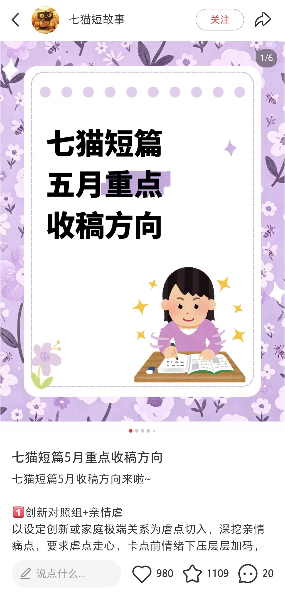
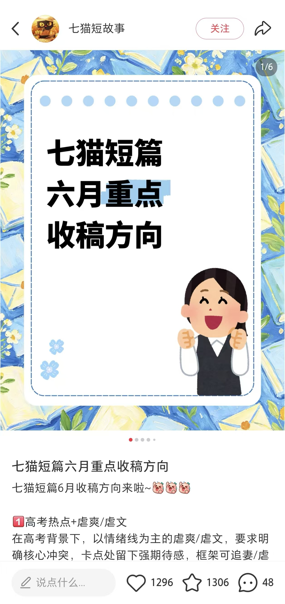
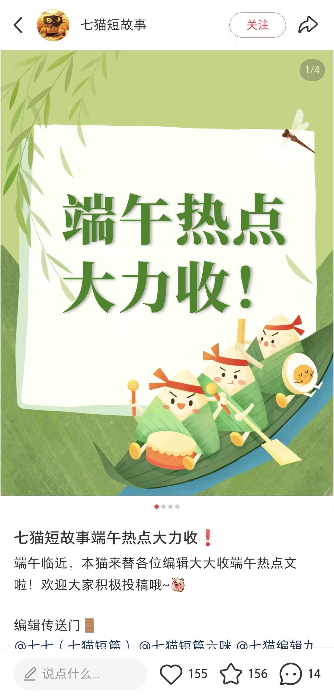
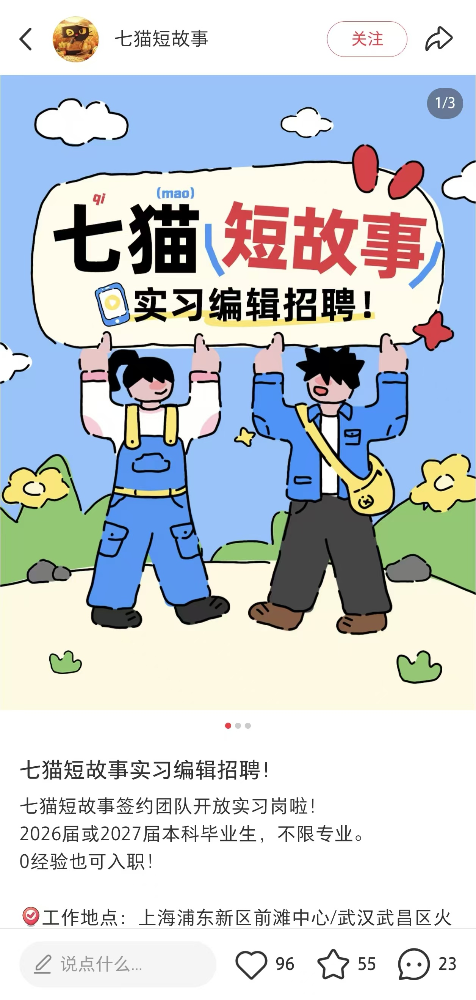
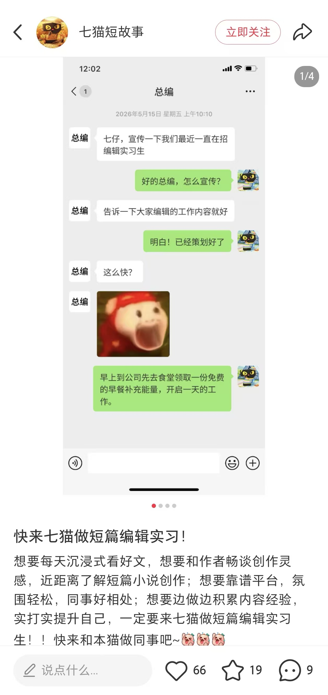
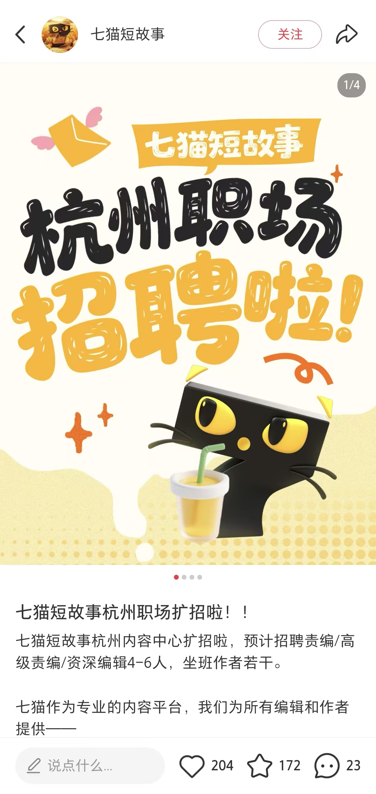
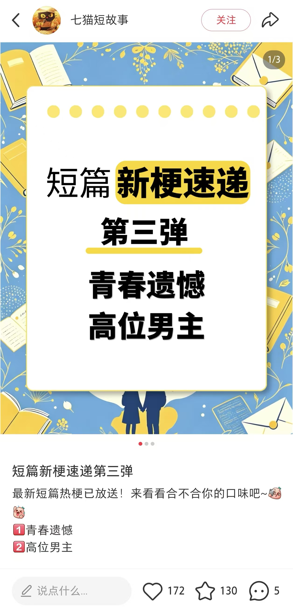
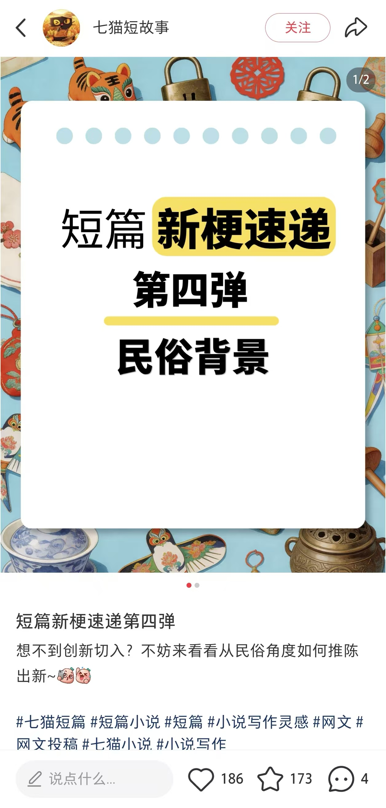
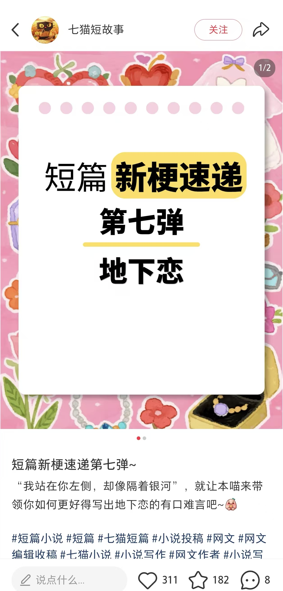

06
实习 · 七猫短故事账号内容策划
运营短故事品牌小红书矩阵账号（官号 + 作者号），围绕读者侧与作者侧双线专题策划内容；从增长目标拆选题、定预热节奏与上线排期。
小红书矩阵运营选题策划周度数据复盘AI 协同生产跨部门协作内容安全审查
01
内容策划
运营短故事品牌小红书矩阵账号，围绕读者与作者侧专题策划专题线内容；跟进编辑例会，从增长目标拆选题策略、预热节奏与上线排期。
- 双线内容矩阵：读者侧（例文、红文拆解、热门梗征集）+ 作者侧（月度收稿方向、节点收稿、福利汇总、招聘专题）
- 排期机制：周维度分配栏目——周三例文分享 / 周四新梗速递 / 周末收稿方向或征文，例会确认选题后进入「预热—发布—复盘」节奏
- 选题来源：编辑例会拆解当月增长目标 → 反推题材方向（如六月：高考情绪线、反差人设、青春痛点、脑洞系统、世情打脸）
三个月账号涨粉 1.2W → 1.7W官号周度新增粉丝峰值 +439（+134%）单周互动数峰值 2,526（+168%）
「六⽉收稿⽅向：⾼考【以情绪线为主的虐爽/虐⽂】、情绪流【反差⼈设/创新⼈设/区别对待 + 情绪流】、⻘春痛点【久别重逢/越界/异地/暗恋 + ⽕葬场】、脑洞【系统/时空穿越/弹幕/⼼声】、世情【打脸复仇爽⽂】」
—— 编辑例会选题拆解（周度台账 · 需求整理环节）
02
数据复盘 + 优化选题
监测账号核心数据，主持周度数据复盘；通过异常数据识别竞品同质化问题，针对内容缺口推动新内容分支搭建。
- 周度复盘机制：逐条笔记核对点赞 / 收藏 / 涨粉 / 封面点击率 / 平均观看时长，异常数据（如人均观看时长 281 秒）单独标注排查
- 同质化识别：热门梗栏目连续 3 周赞藏下滑（202/176 → 142/125 → 106/93），判定题材同质化，据此收缩该栏目、另起分支
- 新内容分支：从「热门梗征集」拆分出「短篇新梗速递」新栏目——首弹即 180 赞 / 145 藏，第四弹 150 赞 / 139 藏，平均观看时长由 12–19 秒提升至 29.7 秒
内容专题点击率提升 20%+新分支栏目平均观看时长 +56%周度复盘 8 次 · 逐笔记归因
「新梗速递第三弹 点赞 147 / 收藏 99，同时段对比第二弹热度回升（112 / 84）【本贴涨粉 10，平均观看时⻓ 21.5 秒，⽐之前两篇新梗速递好，之前两篇都是 12–19 秒】」
—— 周度数据复盘（5.20 台账）
03
访谈 + AI 辅助
按作者激励与访谈需求编写结构化 prompt，由 AI 产出方案与大纲初稿，并接入 AIGC 完成主题配图；人工复核内容框架并判断作者情感维护重点，推动内容迁移方案落地。
- 作者访谈线：围绕作者激励需求设计采访提纲，产出《酸奶采访》等作者故事内容——用于作者侧情感维护与社区氛围建设
- AI 协同流程：结构化 prompt → AI 出方案与大纲初稿 → 人工复核框架 / 判定情感维护重点 → AIGC 主题配图 → 发布
- AI 风险判断：台账中记录「热门梗被平台判定含 AI」「首页推荐由 32% 腰斩至 18%」，据此调整关键词与配图策略
「她（编辑七七）在我写得丧⽓的时候，会帮我想梗想⽅向，经常给我发例⽂，⿎励我，也会上⼿帮我修⽂、修导语…… 对于我⽽⾔，她是我的柳暗花明⼜⼀村，也像是选⻢场的伯乐。」
—— 《酸奶采访》节选 · 作者侧情感维护的真实反馈
04
跨部门协作与安全审查
协调编辑、设计、审核、公关四端完成「选题—生产—发布—舆论处理—案例归档」闭环，梳理敏感内容案例库 50+ 条。
选题（编辑）→生产（设计 / Canva）→发布（运营）→舆论处理（审核 / 公关）→案例归档
- 真实处置案例：红文因尺度问题首次发布违规 → 二次发布脱敏打码后恢复正常；此后发布前重点核查敏感内容
- 平台风险应对：内容含「AI」字样被平台判定为 AI 生成导致限流 → 调整表述与配图；招聘帖因重复标题被限流 → 改为软广形式重发
- 沉淀资产：敏感内容案例库 50+ 条，用于新内容发布前对照检查
四端协作闭环敏感内容案例库 50+ 条违规内容二次处置 0 复发
内容图集 · 点击专辑展开
数据均取自七猫周度运营台账（逐笔记记录点赞 / 收藏 / 涨粉 / 封面点击率 / 平均观看时长）；点击图片可放大查看完整截图。








